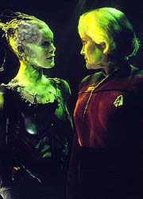
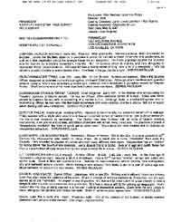
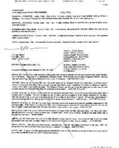
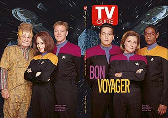
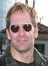
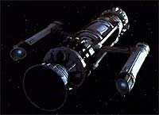
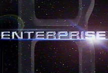

|


|

|
Capítulo
2 - Consolidando um conceito A primeira vez que a idéia surgiu foi no segundo semestre de 1999. Segundo as fontes espalhadas pela internet, a dupla apresentou diversas vezes essa premissa antes que fosse aceita pela Paramount. Em determinado momento, havia sido divulgada uma suposta mudança dos produtores em sua proposta original para incluir um vilão do século 29 que voltava no tempo para impedir o surgimento da Federação, em pleno século 22. O estúdio também chegou a encomendar vários testes de audiência com premissas distintas, que incluíam a velha idéia da Academia e a pré-sequência de Braga e Berman. Brannon chegou a confirmar a existência desses testes, mas reiterou que apenas um dos conceitos vinha da dupla. "Obviamente, isso é verdade", ele disse ao Sci-Fi Wire em abril de 2000. "Eu honestamente não posso dizer muito porque não tenho nada a ver com isso. Isso é algo que a Paramount está fazendo. O teste de conceitos, particularmente em algo que é um franchise, eu entendo que é um procedimento bem normal. Eles estão testando várias coisas." Entretanto, os rumores de que o conceito de Braga e Berman estivesse ligado ao passado do futuro, ou seja, uma época que antecedia todas as outras séries de Jornada, ficavam cada vez mais fortes. Em 4 de abril de 2000, o site TrekToday reportou que finalmente o presidente da Paramount Television, Kerry McCluggage, havia aprovado a idéia dos dois para uma série pré-Clássica. Em 25 de abril aparecia a primeira sugestão de que essa série se passaria em uma Enterprise --uma mais antiga que a NCC 1701 de James T. Kirk. Em 10 de junho, a Paramount registraria os domínios de internet StarTrekEnterprise.com, .net e .org, dando uma boa pista sobre o nome da nova série e sugerindo que os rumores agora pareciam estar caminhando na trilha certa. Em meados de setembro, após Brannon Braga fechar um contrato milionário com a Paramount para desenvolver não só a nova série de Jornada como também projetos próprios, a dupla de criadores já trabalhava no roteiro do episódio piloto de duas horas. O estúdio entretanto mantinha silêncio total quando o assunto era a nova série. Essa política não iria mudar até que fosse impossível conter o segredo. Conforme a pré-produção foi iniciada, nos primeiros meses de 2001, ficou claro que Rick Berman contrataria muitas das pessoas que serviram bem ao franchise ao longo dos últimos anos. Os designers Herman Zimmerman e John Eaves estavam de volta, para criar o interior e exterior da "nova" Enterprise. Merri Howard também voltaria como Produtora Supervisora. Michael Westmore continuaria criando suas maquiagens alienígenas mirabolantes, como já fazia há mais de uma década, assim como Robert Blackman, que continuaria desenvolvendo o vestuário do franchise. Michael Okuda permaneceria criando e supervisionando a arte de cenários.  Entretanto, nem todo mundo estava de volta. Rick Sternbach, designer que iniciou sua relação com Jornada no primeiro filme para cinema e esteve permanentemente no estúdio desde a primeira temporada de A Nova Geração, concluiu seu trabalho no episódio final de Voyager, "Endgame", e não foi chamado de volta."Eu já tinha ouvido que Eaves estava sendo colocado para trabalhar nos designs da Série V antes de fecharmos o departamento de arte de Voyager, e eu simplesmente esperei para ouvir se eu seria requisitado para o novo programa enquanto concluía o trabalho em 'Endgame'. Quando o pedido não veio, eu terminei de empacotar minhas coisas e decidi passar a outros projetos. Ninguém do escritório de produção ou de outro departamento de arte fez algum contato comigo sobre a nova série, a favor ou contra, o que é decepcionante apenas no sentido da falta de profissionalismo da parte deles. Outros membros da equipe também relataram experiências semelhantes", conta Sternbach. Com a equipe trabalhando a todo vapor nos novos designs, uniformes e cenários, restava encontrar os elementos principais da nova série: os atores que dariam vida aos personagens. Foi nesse momento que o segredo acabou sendo revelado. O site TrekToday conseguiu obter uma cópia da lista de elenco enviada às agências de atores dos EUA sobre a nova série. O documento, liberado em 4 de março de 2001, dizia exatamente o seguinte dos personagens:  Capitão Jackson Archer: Quarenta e poucos anos. Atlético. Personalidade audaciosa. Intensamente curioso. Nascido e crescido como um explorador. Ao contrário dos capitães da Frota dos séculos seguintes, ele exibe um senso de contemplação e empolgação, assim como uma pequena trepidação sobre as coisas estranhas que encontrará. Ele tem restrições contra os Vulcanos, que ele considera estarem reduzindo o progresso da humanidade. Mas sua oficial de ciências é Vulcana, e ele está lutando para reconsiderar seus preconceitos. Embora ele tenha um forte senso de dever, ele é um tipo renegado --ele não teme questionar ordens ou mesmo desobedecê-las se ele achar que está certo.Sub-comandante T'Pau: Fim dos 20 ou começo dos 30 anos. Fêmea Vulcana. Austera, mas ainda sensual. Ela é a oficial de ciências designada para acompanhar o progresso da humanidade a bordo da Enterprise. Embora seja cuidadosa e defensiva entre humanos, que ela considera primitivos e irracionais, ela desenvolveu um certo respeito pelo capitão Archer. Ela se tornará um de seus mais leais e confiáveis tripulantes. Comandante Charlie 'Spike' Tucker: Engenheiro-chefe. Trinta e poucos anos. Um sulista que gosta de usar sua personalidade do "campo" para desarmar as pessoas. Ele tem um impulsivo e sarcástico senso de humor. Spike foi escolhido a dedo pelo capitão Archer, que é algo como um mentor para ele. Embora Spike seja um brilhante engenheiro e um excepcional oficial, ele tem muito pouca experiência com culturas alienígenas, e costuma ser um "peixe fora d'água" quando lidando com novas civilizações. Doutor Phlox: Alienígena exótico. Oficial médico. Parece estar na casa dos 40 anos, mas não estamos certos de sua idade real. Phlox fala com um sotaque levemente alienígena e tem um excêntrico senso de humor que ninguém entende direito. Ele acha a humanidade fascinante. O médico encheu a enfermaria com todo tipo de instrumento médico bizarro, plantas alienígenas e esporos, uma câmara de stasis com pequenas criaturas vivas. Ele pratica um tipo de "medicina intergaláctica", como nunca vimos antes. Isso faz a mais rotineira visita à enfermaria uma aventura inesperada. Tenente Joe Mayweather: Piloto. Afro-americano. De 25 a 30 anos. Um produto singular da vida no século 22, Mayweather cresceu em naves de carga. Como resultado, Joe é mais "interestelar" até que o capitão. Ele viajou para dezenas de planetas e conheceu muitas diferentes espécies alienígenas. Mayweather tem um "instinto" para viagem espacial que poucos humanos têm. O amigo mais próximo de Joe é Spike. Semelhantes em idade e espírito, esses dois irão gastar suas horas fora do trabalho procurando novas formas de apreciar a vida no espaço. Tenente-comandante Malcolm Reed: Oficial de armamentos. Britânico. Entre 25 e 35 anos. Na nova era da iluminação da humanidade, Reed é um pouco como um retardatário. Ele é um "soldado" do século 22, direto, polido e seguidor das regras. Reed é cheio de contradições. Apesar de sua quase obsessão por munição, ele é simpático, tímido e embaraçado com as mulheres. Quando testando uma nova arma, ele costuma colocar um par de tapa-ouvidos da era espacial, pois não gosta de barulho alto. Alferes Hoshi Sato: Oficial de Comunicações. Japonesa. De 25 a 30 anos. Arrebatadora e inteligente, Hoshi tem um espírito mal-humorado que costuma testar a paciência da tripulação. Ela está a cargo das comunicações na Enterprise, mas também serve como tradutora da nave. Uma especialista em exolinguística, ela aprendeu a manipular suas cordas vocais para emitir uma ampla categoria de sons alienígenas que nenhum humano jamais produziu. Ela tem uma afinidade natural para aprender línguas. Hoshi não gosta da idéia de ser presa em uma "lata de metal" em velocidades impossíveis. Toda vez que a nave entra em dobra ela se segura no console e fecha os olhos. Silik: Fim dos 30 anos, começo dos 40. Alienígena. Fisicamente ágil. Um dos líderes dos Suliban, uma espécie mortal obcecada com melhoramentos genéticos. Nosso vilão. (Nota: Silik é descrito como um personagem recorrente). Almirante Forrest: Humano. Entre 50 e 60 anos. Um militar de carreira que possui o maior posto na Frota. Ele aprecia o capitão Archer e o escolheu pessoalmente para comandar a Enterprise. (Nota: Forrest e todos os outros personagens daqui em diante são não-recorrentes, e escalados apenas para o piloto) Almirante Leonard: Humano. Entre 40 e 50 anos. Um oficial de alta patente na Frota que serve diretamente sob o almirante Forrest.  Comandante Williams: Humano. 50 anos. Um temperamental oficial da Frota que serve como adido do almirante Forrest.Embaixador Soval: Vulcano. Entre 60 e 70 anos. Um sábio e arrogante diplomata que tem pouca paciência com o capitão Archer. Tos: Vulcano. 50 anos. Assistente do embaixador Soval. Ele compartilha o desdém de Soval para com a cultura humana. Quando divulgada, a lista causou enorme efervescência entre os fãs. Apareceram diversos relatos negando a veracidade do documento, e outros tantos confirmando. O TrekToday foi catapultado para a fama, após ser citado em noticiários de emissoras locais da UPN, no site da CNN e na prestigiada revista "TV Guide". Aos poucos, esses veículos de imprensa deram mais e mais credibilidade ao relato, mas a dúvida persistiu até o anúncio oficial. O TrekToday, entretanto, sempre afirmou absoluta certeza de que seu documento era legítimo.  A lista, classificada por muitos fãs como uma cópia carbono dos personagens da Série Clássica, não foi bem recebida. Até o último momento alguns fãs se recusaram a acreditar que a nova série seria uma pré-sequência no século 22. Enquanto isso, os produtores estavam mais preocupados em escolher seus atores --e escolher bem. Considerando a importância de ter um elenco forte, começando pelo capitão, eles buscaram alguém com renome para liderar a nova Enterprise. E eles encontraram Scott Bakula, ator veterano de ficção científica, que ficou famoso por seu papel na série "Quantum Leap".  Após intensas e difíceis negociações (segundo algumas fontes, o ator teria pedido uma pequena fortuna e poder de veto em roteiros), Bakula acabou fechando contrato para estrelar a nova série. Mas, por incrível que pareça, encontrar o capitão não foi tão difícil quanto escalar sua primeiro-oficial.T'Pau deveria assumir na nova série uma das funções de Seven of Nine em Voyager --ser a "gata" de Jornada. E, como Rick Berman já testemunhou quando da escalação de Terry Farrell para interpretar Jadzia Dax em Deep Space Nine, é difícil encontrar uma atriz estonteantemente bonita que seja capaz de atuar bem. A busca foi incessante --T'Pau foi o único personagem que exigiu um segundo pedido às agências de atores dos EUA, feito em 18 de abril. A atriz Marjorie Monaghan, uma veterana de ficção científica televisiva, com créditos como a líder rebelde das colônias marcianas em "Babylon 5" e com uma participação em Voyager como a viking Freya, no episódio "Heroes and Demons", chegou a disputar o papel, que acabou ficando com Jolene Blalock, uma atriz "quente", mas com poucos créditos de atuação. Enquanto os produtores faziam ajustes finais no roteiro, trocando nomes de personagens (Joe virou Travis, Jackson virou Jonathan, T'Pau virou T'Pol) começavam a surgir na internet os primeiros comentários sobre o enredo do piloto, que mostraria o primeiro contato com os Klingons. Uma resenha extremamente negativa foi publicada no site Ain't It Cool News, acompanhada alguns dias depois por uma resenha totalmente otimista no TrekToday. Mesmo assim, sem uma confirmação oficial, todos os rumores poderiam ser apenas um castelo de cartas a se desmanchar a qualquer minuto. Em Voyager, os episódios finais estavam sendo exibidos, e eles também já davam algumas pistas sobre a nova série, embora de forma mais sutil do que a introdução que A Nova Geração forneceu a Deep Space Nine, e esta a Voyager. Em "Friendship One", conhecemos uma sonda enviada da Terra em 2067, apenas quatro anos após Zefram Cochrane inventar o motor de dobra. No episódio, a Voyager era enviada para resgatar essa sonda, perdida no quadrante Delta, o que deu a oportunidade perfeita para diálogos comentando os primórdios da exploração espacial, antes da formação da Federação.  Em outra referência à atividade espacial pré-Federação, em "Homestead" vemos Neelix promover uma festa pelo 315º aniversário do primeiro contato da Terra com os Vulcanos, feito logo após o vôo de Cochrane. As pistas estavam todas lá, apontando para um período anterior ao nascimento da Federação. Mas, claro, ninguém aceitaria isso como verdade antes de uma confirmação oficial da Paramount.E ela veio --em cima da hora. Apenas a quatro dias do início das filmagens do episódio piloto, iniciadas em 14 de maio de 2001, o estúdio enviou uma nota à imprensa revelando o novo projeto: a série Enterprise, em uma nova nave comandada pelo capitão Jonathan Archer, a ser interpretado por Scott Bakula. Nos dias que se seguiram mais detalhes surgiram. O elenco completo (que incluía John Billingsley, Linda Park, Anthony Montgomery, Dominic Keating e Connor Trinneer), com seus respectivos personagens, mais nomes envolvidos na produção e o horário de exibição da nova série. Entretanto, somente quando a UPN apresentou oficialmente sua nova programação aos anunciantes, no dia 17 de maio, em Nova York, todos ficaram sabendo definitivamente o que era Enterprise --a primeira série de Jornada a não levar as palavras "Star Trek" no nome. "Star Trek - Enterprise" seria redundante, segundo o estúdio e os produtores. "Vocês são testemunhas de uma série que garante atenção, reconhecimento, ansiedade e, mais importante, sucesso instantâneos", descreveu Tom Nunan, presidente da UPN, aos anunciantes e representantes de emissoras afiliadas. "Ambientada no século 22, quase 150 anos antes de James T. Kirk e apenas a 100 anos de agora, Enterprise nos introduz aos dias pioneiros da exploração espacial, onde viagens interestelares estão em sua infância, e um universo --e o desconhecido-- carrega tanto perigo como vislumbre", disse Nunan, ecoando a nota à imprensa divulgada pela UPN no mesmo evento. "Apropriadamente, a tripulação da Enterprise exibe um senso de vislumbre assim como uma pequena trepidação sobre as coisas e os seres estranhos que encontrarão. Estando entre os primeiros a explorar o espaço profundo, eles terão de provar que estão prontos para a vida entre as estrelas", afirmou. "Liderando a tripulação está o capitão Jonathan Archer, o protótipo dos capitães da Frota Estelar que virão. Ele é audacioso, intensamente curioso e ansioso por se aventurar onde nenhum homem jamais esteve. Ele tem todas as características que qualquer astronauta da Nasa hoje precisaria para liderar uma tripulação para os céus sobre os quais eles apenas leram e estudaram antes." O presidente da rede exibiu um vídeo promocional que contava um pouco da história de Jornada e introduzia Enterprise com um slogan bem à la Episódio I de Star Wars: "A fronteira final tem um novo começo".  Nenhuma imagem do novo programa foi exibida, mas o vídeo incluía um tratamento do título Enterprise, tal e qual ele apareceria na telinha nas apresentações do programa. No pequeno segmento, porções de entrevistas com o produtor-executivo Rick Berman e outros membros de equipe eram intercaladas com clipes das séries e filmes de Jornada."Jornada está meio que imersa na mente das pessoas. Está por aí já há 35 anos", disse Rick Berman. "Não há ninguém lá fora que não tenha ouvido falar de um torpedo fotônico, ou um Klingon, ou 'Beam me up Scotty' ou velocidade de dobra. É parte da nossa cultura, e eu acho que a familiaridade com ela é algo que é muito confortável às pessoas." "O que é importante sobre Enterprise é, é uma nave de exploração, e o vôo espacial --o vôo espacial interplanetário-- ainda é uma coisa bem nova nessa era", disse Marvin Rush, diretor de fotografia da nova série. "O motor de dobra já estava por lá há algum tempo, mas não muito. A tecnologia de transporte é também bem nova, e enquanto já é provada eficiente, nem todo mundo no mundo confia nela." A respeito do interior da nave do século 22, Rush disse: "Os controles são mais táteis, mecânicos. Os botões --você precisa apertá-los, quer dizer, eles não são telas de toque". "A humanidade está aprendendo sobre outras culturas, outras sociedades espaciais. É um tempo de descoberta, de quem realmente somos, onde nos encaixamos, no cosmos." Herman Zimmerman também participou do vídeo. Sobre a premissa, ele comentou que "basicamente estamos recebendo muita informação sobre o que há fora da nossa região da galáxia dos Vulcanos". Berman concluiu dizendo que "Jornada sempre representou uma visão muito positiva do futuro, e muita ficção científica não fez isso. E eu acho que isso significa muito para muita gente". Durante o resto de sua apresentação, Nunan apontou que cada spin-off de Jornada foi lançado com uma audiência espetacular. "Cada versão do franchise de Jornada nas Estrelas sai da plataforma de lançamento em dobra espacial, com os retrofoguetes à toda, deixando para trás a competição, vivendo longamente e prosperando." Restava saber se Enterprise iria sobreviver às expectativas. Capítulo
anterior | Índice
| Próximo capítulo |